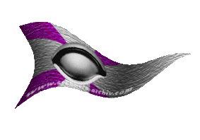
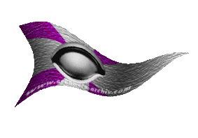

|

|
Das schwarze Brett
|
|
| Übersicht,
Anschläge und Stammtisch (RPG) |
|
Schmiede der Scherbe, vereinigt Euch! (2  ) )
|
| Carnifex Maximus (RIP) |
Schmiede der Scherbe, höret meine Worte!
Zahlt auch Ihr für Dinge, die bis auf ein wenig Tran oder Kakao nichts wertvolles enthalten den eineinhalbfachen (wie bei Erfrischungstränken) oder gar doppelten (wie bei Überlebensrationen) Herstellungspreis?
Und habt Ihr Probleme, bei Euren Waffen und Rüstungen überhaupt das Material bezahlt zu bekommen?
Damit muß Schluß sein!
Wehret Euch, Schmiede, und zahlt es den Wucherern mit gleicher Münze heim!
Schließt Euch zusammen und verkauft Eure Waffen und Rüstungen nicht mehr unter 150% des Materialpreises! - Gemeinsam sind wir stark!
Überlebensrationen zusammenmischen kann jeder Anfänger und auch Erfrischungstränke zu brauen ist nur Gesellenarbeit, aber ein Schwert schmieden, das nicht beim ersten Einsatz bricht ist eine Meisterleistung!
Schmiede der Scherbe, steht zusammen! - Gemeinsam sind wir stark! - Brechen wir das Kartell der Drogenhändler!
Sir Carnifex Maximus,
Vorsteher von Lancelots Bierburg,
Kardinal im Dienste des einzig wahren Glaubens an Pheron
Zur 23. Stunde am 82.Erntemond im Jahre 427 |
24.01.07 8:50
|
|
| Bratislav Gonzales (RIP) |
Das erzähl ich Maki!
Markgraf Dr. Bratislav Gonzales,
Vorsteher von Amilano,
Anführer der glorreichen Nation "Malleus Maleficarum",
König von Trithales
Zur 2. Stunde am 83.Erntemond im Jahre 427 |
24.01.07 9:32
|
|
| Raziel (RIP) |
*runzelt die Stirn als er den Anschlag liest und murmelt* aufruf zum Wucher ... nun ja
Baron Frodo Schattenwald,
Vorsteher von Arboreum Lothianis,
Anführer der glorreichen Nation "Waldläufer",
Verlobter der reizenden Obsidia Schwarzfeder
Zur 3. Stunde am 83.Erntemond im Jahre 427 |
24.01.07 9:45
|
|
Luzi ni Mur
  |
Wo er Recht hat... ich nehm pro Schicht 2-3k GS, wenn ich die gleichen Tarife anlegen würde, wie mancher Magier für seine Blitzprodukte, wovon er 6 am Tag herstellt, dann wäre ich entweder steinreich - oder bettelarm, weil mir das niemand abkauft ;)
Luzi ni Mur
Zur 3. Stunde am 83.Erntemond im Jahre 427 |
24.01.07 9:52
|
|
Frathag Graubart
  |
bei der Herstellung mittlerer Energietränke verdient ein Magier der sehr teuer einkauft, immer noch mindestens 6k pro Schicht. So wie die Schmiede aber ein Problem haben an Endurium zu kommen, so müssen die Magier an Kakao kommen, was wiederum nicht trivial ist. Genauso wie ein Schmied erst dann effektiv arbeitet, wenn er das Endurium selbst gefunden hat, so geht es auch dem Alchemisten in seinem Elfenbeiturm. Die Gemeinsamkeiten sind also unübersehbar.
Doch es gibt auch Unterschiede. Energietränke und Überlebensrationen werden im Dutzend verbraucht. Schluck und weg. Dafür geht ihre Herstellung auch sehr schnell. Eine Rüstung soll mich viele Jahre lang vor Schaden bewahren, da muss ein sorgfältiger Schmied halt lange dran basteln. Auf der anderen Seite... hat ein Schmied einmal die benötigten Waren, kann er über lange Zeiträume arbeiten und muss sich um nichts weiter kümmern. Mehr noch, er produziert nebenbei noch Schmuck, Bronze, Waffen und Rüstungen für Armeen und verdient damit auch ein erkleckliches Zubrot. Nebenbei kann er sein bitter benötigtes Endurium in den Bergen abgrasen, wenn er diese Berge nur vor anderen erntewütigen Wesen abschirmt. Der Alchemist hingegen kann seinen Kakao nicht auf dem offenen Feld erlangen! Er braucht Glück bei Karawanen oder einen verruchten Bösewicht der große Mengen auf dem Schwarzmarkt handelt. Er muss auch für jede Schicht neue Waren vor Ort haben, und hat keinen Zuverdienst über andere Waren, die er quasi nebenbei, im Vorübergehen noch mitproduziert, wie es die Schmiede tun. Die Ausbildung von Alchemisten dauert dann auch direkt 50% länger als bei Schmieden, so dass man den Schmiedemeister durchaus annähernd mit dem Ersteller mittlerer Energietränke vergleichen kann.
Wertet also selbst, sollte der Schmied das gleiche Geld pro Schicht bekommen wie der gütige Heiler, der euch mit seinen Kräutern und Pulvern zu mehr Energie verhilft?
Baron Bruder Frathag Graubart
Zur 6. Stunde am 83.Erntemond im Jahre 427 |
24.01.07 10:34
|
|
| Narndil Biunda v. Tacheless (RIP) |
Ich beschäftige in meinem Magierturm einen fleissigen strebsamen Alchemisten.
Und daher weiss ich welcherlei Arbeiten anfallen und weiss auch welche Zutaten für die unterschiedlichen Tränke benötigt werden.
Kakao - Das ist wohl die teuerste Zutat man für einen Trank benötigt, und die Zutat die auch am schwierigsten zu bekommen ist
Kaffee - Auch hier schwanken ständig die Preise
Tabak - Auch Tabak unterliegt ständigen Preisschwankungen, in der Vergangenheit ging der Preis zum Glück zurück.
Kräuter - Auch diese Zutat ist nicht zum Schnäppchenpreis zu bekommen.
Dazu kommen, je nach Trank, noch die unterschiedlichsten anderen Zutaten die teils teurer, teils günstiger ist.
Nehmen wir als Beispiel den Erfrischungstrank.
für einen kleinen benötigt man:
5 Holz - leicht zu bekommen, 3 GS je
5 Gold - leicht zu bekommen, zwischen 20 und 30 GS je
10 Getreide - leicht zu bekommen, 3 GS je
5 Bier - je nach Bedarf der Umgebung zu bekommen, zwischen 25 und 30 GS je
5 Wein - je nach Bedarf der Umgebung zu bekommen, zwischen 70 und xx GS je
5 Tran - nicht mehr so leicht zu bekommen, zwischen 1500 und 1xxx GS je
2 Pilze - aufgrund der hohen Gläubigeranzahl (Opferware) auch nicht so leicht zu bekommen, zwischen 130 und 150 GS je
5 Kräuter - schwerer zu bekommen, ca 300 GS je
5 Kaffee - schwerer zu bekommen, zwischen 230 und 250 GS je
5 Kakao - sehr schwer zu bekommen, zwischen 1700 und 2xxx GS je
Zu bedenken ist dabei das gerade die letzten 4 Zutaten nicht einfach zu bekommen sind und sehr oft Preistreiberei und Wucher unterliegen.
Nun kann sich jeder hier ausrechnen wieviel Goldstücke einen die Produktion eines Trankes kostet.
Bei der Gewinnspanne sollte man bedenken wie schwer es ist manche Zutaten zu bekommen und das man oftmals weit reisen muss um selbige zu finden.
Ich denke demnach nicht das die ganzen Tränke und Brauereien aus dem Magierturm zu teuer sind. Natürlich gibt es einige schwarze Schafe die Wucherpreise verlangen, doch das tut zum Glück nicht jeder.
Wie schon vom werden Bruder Frathag Graubart erwähnt, bringen die Tränke jedem der sie nimmt einen grossen Vorteil, ob nun bei der Gesundheit oder der Kraft. Und das sollte man nicht vergessen.
Narndil Biunda,
Ehefrau des ehrenwerten Schachermüller,
Heldin des Orkensturms
Zur 12. Stunde am 83.Erntemond im Jahre 427 |
24.01.07 11:53
|
|
| Ardán Schwarzauge (RIP) |
*zeigt auf den häßlichen Vogel mit dem langen Bart*
Brati ist ´ne Petze!
Deichgraf Ardán Fálmanôr,
Königlicher Deichbaumeister,
Teilnehmer am diesjährigen Gesangswettbewerb
Zur 13. Stunde am 83.Erntemond im Jahre 427 |
24.01.07 12:10
|
|
| Raziel (RIP) |
*Lacht und erhebt seine Stimme*
Werte Schmiede beschwer euch bei denne die Ihre Enduriumzuchten und Mahaplantagen der Allgemeinheit verschließen dann kämet ihr leicht wieder an die benötigten Rohstoffe
... *erinnert sich an die Zeit als Waffen und Rüstungen noch zu vernünftigen Preisen zu haben waren ...seufz*
Also hört auf mit dem Jammerlappengewäsch und unternehmt was dagegen und Stürzt die Endugroßproduzenten und die Riesenmahagonieplantagenbesitzer und hört auf zu jammern wie ein Baby
Baron Frodo Schattenwald,
Vorsteher von Arboreum Lothianis,
Anführer der glorreichen Nation "Waldläufer",
Verlobter der reizenden Obsidia Schwarzfeder
Zur 18. Stunde am 83.Erntemond im Jahre 427 |
24.01.07 13:25
|
|
Luzi ni Mur
|
So nen Blödsinn hier überhaupt über Kakao, Endurium und Mahagonipreise zu reden... wir gehen ja davon aus, dass der Kunde diese direkt oder indirekt sowieso bezahlt. Wir vergleichen also lediglich die Gewinne pro Arbeitsschicht unabhängig vom Kostenfaktor der verarbeiteten Rohstoffe, und stellen fest, dass während ein Magier mit 6k Gewinn pro Schicht dasteht, und hunderte seiner Produkte an den Mann bringen kann, ein Schmied mit meist weniger als 3k Gewinn pro Schicht dasteht, und, je besser er gearbeitet hat, umso geringer der Nachkaufbedarf des Kunden... irgendwie *grml* naja... das ist bestimmt dieser Murphy schuld *sich am Kopf kratzt*. Oder regeln doch Angebot und Nachfrage den Preis, und wir haben einfach zuviele Waffen und Rüstungen im Umlauf? Ein alternativer Vorschlag zur Teurung unserer Produkte: lasst uns den Preis beim alten belassen, und dafür die Qualität senken... das steigert die Nachfrage, und zeitgleich auch noch den Gewinn *frechgrinst*
Luzi ni Mur
Zur 7. Stunde am 84.Erntemond im Jahre 427 |
24.01.07 16:20
|
|
| Raziel (RIP) |
.... alle nur Gewinnorientiert *kopfschüttelnd davon geht..*
Baron Frodo Schattenwald,
Vorsteher von Arboreum Lothianis,
Anführer der glorreichen Nation "Waldläufer",
Verlobter der reizenden Obsidia Schwarzfeder
Zur 8. Stunde am 84.Erntemond im Jahre 427 |
24.01.07 16:30
|
|
| Carnifex Maximus (RIP) |
Überlebensrationen, die hier von allen ausser Acht gelassen wurden, werden auch neben dem "normalen" Betrieb produziert, ebenso wie Waffen und Rüstungen in der Schmiede.
Und selbst dort muss man etwa 2.000 Goldstücke für jede Arbeitsschicht bezahlen, die nicht durch den Warenwert gedeckt sind.
Wollte ich, Narndils Rechnung folgend, (für alle Rechenunwilligen: Es kommen zwischen 19.530 und rund 25.000 GS heraus, im Mittel also etwa 22.500 GS. - Verkauft werden diese Tränke zu mindestens 6.000 GS mehr bei einer Schicht Arbeitsaufwand) zum Beispiel einen Schuppenpanzer verkaufen, käme das folgende heraus:
901 Eisen zu 20 GS, 90 Endurium zu 2.000 GS macht einen Materialwert von 198.000 GS. - Mit 24 Schichten Arbeit zu je 6.000 GS komme ich auf nochmal 144.000 GS, so kommt ein guter Schuppenpanzer auf 342.000 Goldstücke!
Aber das habe ich nicht einmal gefordert! - Meine Forderung lautet 150% des Materialpreises, nicht mehr, nicht weniger! - Das sind gerade mal 297.000 Goldstücke!
Nicht berechnet ist dabei die Tatsache, dass allein das Rezept fast eine Million gekostet hat, der Hersteller von Erfrischungstränken also schon nach fünf Tagen Gewinn einfährt, der Hersteller von Schuppenpanzern nach dieser Rechnung frühestens nach fünf Wochen!
Ausserdem muss der Schmied Waren im Wert von 198.000 GS vorstrecken, der Alchemist nur im Wert von 22.500 GS. - Ausserdem kann er seinen Gewinn schon nach ein paar Stunden reinvestieren, der Schmied braucht mehrere Tage, bevor er Geld für seine Arbeit sieht!
Kein vorgebrachtes Argument sticht also, im Gegenteil, ich werde nur bestärkt in der Auffassung, dass die Schmiede unterbezahlt sind!
Aber das kann hier und jetzt ein Ende haben! - Schmiede der Scherbe, vereinigt Euch!
Sir Carnifex Maximus,
Vorsteher von Lancelots Bierburg,
Kardinal im Dienste des einzig wahren Glaubens an Pheron
Zur 16. Stunde am 84.Erntemond im Jahre 427 |
24.01.07 18:29
|
|
| Raziel (RIP) |
*verzweifelt an dr Engstirnigkeit von Carnifex Maximus*
Nur mal so ne Frage wer hat euch genötigt Schmied zu werden oder wer nötigt euch einer zu bleiben wenn ihr so Neidisch auf den Erfolg
der Alchemisten seid warum werdet ihr dann keiner ...
*kopfschüttelnd von dannen zieht*
Baron Frodo Schattenwald,
Vorsteher von Arboreum Lothianis,
Anführer der glorreichen Nation "Waldläufer",
Verlobter der reizenden Obsidia Schwarzfeder
Zur 17. Stunde am 84.Erntemond im Jahre 427 |
24.01.07 18:47
|
|
| Itto Ogami (RIP) |
Werter Carnifex Maximus,
auch ich bin Schmied aber auch Magier und kann eure Frustration gut nachvollziehen. Mittlerweile habe ich mir eine eigne Schürfergruppe zugelegt um den hohen Endupreisen zu entfliehen.
Was die überteuerten Preise angeht, kann ich nicht recht folgen, immerhin kostet Tran 1950 GS und Kakao auch, die Preise für Ü-Rationen und Ed`s sind durchaus gerechtfertigt.
Eure Idee finde ich gut, würde auch gerne eine Schmiedengilde auf der Scherbe sehen.
Drake,
Kardinal im Dienste des einzig wahren Glaubens an Pheron,
Teilnehmer des Gedichtwettbewerbs der Zeitung
Zur 20. Stunde am 84.Erntemond im Jahre 427 |
24.01.07 19:29
|
|
| Kage Hitomi (RIP) |
Kratzt sich an der Wange, da Carnifex Maximus scheinbar Narndil´s Liste vernachlässigt hat.
Werter Sir Maximus,
Vielleicht betrachtet Ihr die Sache auch einmal von der Seite, man muss etliche Erfrischungstränke herstellen, bevor man sie lohnend verkaufen kann und dafür braucht man von den 10 verschiedenen benötigten Waren einige 100 bis zu einigen 1000.
Von den 10 unterschiedlichen Waren sind 2 sehr schwer zu bekommen und 3 schwer, dazu kommen dann noch einmal 5 andere Waren und alles in allem ist es ein ziemlicher Reiseaufwand um alles in den benötigten Mengen zu erhalten.
Hingegen scheint ein Schmied ganze 2 Waren zu benötigen, um Schuppenpanzer herzustellen, davon wurde einem das Eisen in letzter Zeit auf dem scherbenweiten Markt von einigen Schürfern in riesigen Mengen angeboten und Endurium ist vermutlich nicht so schwer zu organisieren wie Lebertran und Kakao zusammen.
Außerdem werden Erfrischungstränke und Heil-/Manawaren teilweise täglich zu 100 oder mehr von einer einzelnen Leibwache verbraucht, um täglich 100 Tränke zu brauen bedarf es dem Aufwand von 17 Magiertürmen bzw. 17 Bäckereien, wenn man es auf Heilwaren bezieht. Dementsprechend ist die Nachfrage ungleich höher, also werden doch wohl die Hersteller ihr geringes Angebot mit einem gewissen Aufpreis versehen, da sie es jederzeit jemand anderem verkaufen könnten und eine Aufwandsentschädigung für ihr ewiges Reisen haben möchten.
Bei Überlebensrationen verstehe ich Euch auch nicht ganz...kleine haben meist eine Gewinnspanne von etwa 100%-125%, das ist zwar sehr viel verglichen mit Euren Schuppenpanzern aber ich finde durch aus berechtigt.
Mittlere haben (ohne jetzt nach zu rechnen) nicht mehr ganz 50% Gewinn über den Materialeinsatz, bei großen Rationen zweifel ich an mehr als 10% stark....
Ich wundere mich, dass Ihr gegen die Wurstbrote nichts sagt, welche oft mit mehr als 1000% Gewinn vertrieben werde?
Tura mit Euch, aber ich muss gestehen, dass ich nicht hoffe, dass Euer Vorhaben gelingt.
K. Hitomi
Kage Hitomi,
Teilnehmer des Gedichtwettbewerbs der Zeitung
Zur 3. Stunde am 85.Erntemond im Jahre 427 |
24.01.07 20:59
|
|
| Raziel (RIP) |
*schließt sich der meinung von Kage Hitomi
an* .. ich schlage allen schmieden vor wenn sie meinen zu wenig gewinn zuu machen ihre schmieden abzureißen und wurstbrotbäcker zu werden ... viel Vergnügen
Baron Frodo Schattenwald,
Vorsteher von Arboreum Lothianis,
Anführer der glorreichen Nation "Waldläufer",
Verlobter der reizenden Obsidia Schwarzfeder
Zur 3. Stunde am 85.Erntemond im Jahre 427 |
24.01.07 21:07
|
|
Mixcoatl
|
Ja, eine gute Idee mit den höheren Verkaufspreisen, die Gewinnspanne ist wirklich lächerlich klein...
Mixcoatl |
24.01.07 21:16
|
|
| Lilokel ok Schnjokel (RIP) |
Eigentlich ist eine Diskussion nicht wirklich nötig, aber nur damit die Argumente auch ausgeglichen sind:
Hier wurde erwähnt das Tränke ja immer in größerer Zahl konsumiert werden, aber wenn ich eine 8köpfige Gruppe mit Plattenrüstungen (mit einer Qualität von 69-72 Punkten auf der Schmiedeskala der Innung) ausstatte, dann könnte ich mit diesem Arbeitsaufwand auch 640 große Erfrischungstränke herstellen.
Mit den 8 Plattenrüstungen mache ich insgesamt einen Gewinn von 3,2 Mios, damit gebe ich mich auch zufrieden.
Mit den großen EDs kann ich 8,2 Mios erzielen, also der 2,5fache Gewinn.
Ich weiß wovon ich rede weil ich sowohl Schmieden als auch einen MT betreibe und so gut wie ich trifft es nciht jeder Schmied, da sich Plattis gewinnbringender verkaufen lassen als jedes andere Schmiedeprodukt (die Rezeptkosten mal ausser Acht gelassen).
Zum eigentlichen Thema, Wichtelsche Handarbeit hatte bei mir schon immer einen fairen Preis von dem ich gut leben kann und meine Kunden offensichtlich auch.
150% der Rohstoffkosten kann wenigstens ich keinesfalls durchsetzen, denn für merklich über 3 Mios kauft mir keiner mehr einen Platti ab ;D
Zumal ein so fixer Satz von 150% ja auch nciht realisierbar ist, denn ein guter Schuppi sollte mehr kosten als ein normaler, aber jeder Schmied sollte sich seine Arbeit fair entlohnen lassen und wenn er mit einem Hungerlohn zufrieden ist so würde ich ihm da nciht reinreden wollen, die Nachfrage ist groß genug das jeder Schmied faire Preise erzielen kann. Zumindest hatte ich noch keine derartigen Probleme auf meiner Ware sitzen zu bleiben, nur manch einem Kunden muss man erst vorrechnen wieso der Preis mittlerweile gestiegen ist ;D
Lady Lilokel ok Schnjokel,
Vorsteherin von Monjiopoly,
Anführerin der glorreichen Nation "Toppelmopfer Topfenmoppler",
Ehefrau des ehrenwerten Fjokel ok Schnjokel,
Kapitänin der "Wichtelwolke"
Zur 15. Stunde am 85.Erntemond im Jahre 427 |
24.01.07 23:57
|
|
Gonathras
   |
Werter Carnifex Maximus,
bekanntlich regelt sich der preis ja aus angebot und nachfrage, falls es euch gelingt einen großteil der Schmiedemeister zu überzeugen und sie den Preis anheben, dann allerdings die Nachfrage sinkt und keiner mehr Eure Produkte kauft wäre ja auch keinem geholfen...
Bei den Sachen die ihr Ansprecht scheint wohl eine hohe Nachfrage und ein geringeres Angebot zu sein...
Vielleicht habt ihr ja aber auch Glück und es gibt tatsächlich auch eine Nachfrage nach teuerern Schmiedewaren.
Aber wie manche Leute die sich schon zu dem Thema geäußert haben sehe ich es ähnlich, das mit Sachen die von Magiern hergestellt werden ein größerer logistischer Aufwand verbunden was wiederum eine höhere Gewinnspanne rechtfertigen würde, wie auch immer, ich wünsche euch Viel Glück bei eurem Versuch den Markt zu beeinflussen .
Gonathras
Zur 16. Stunde am 85.Erntemond im Jahre 427 |
25.01.07 0:01
|
|
| Raziel (RIP) |
*lacht bei den beiträgen*
gut zu wissen werd bei der nächsten Großbestellung von Ükits auch pro stück(schicht)
einn zuschlag von 2k verlangen ... das ist soooooooo lächerlich Ihr schmiede seit in den letzten monden ohnehin schon um 100% teurer geworden.
solltet ihr tatsächlich durchbringen das ihr nochmals um 50% raufgeht mit euren preisen möchte ich hier und jetzt zu einem Bojkott auf Waffen und Rüstungen aufrufen ... mal sehen wer den längeren Atem hat die Schhmiede deren Lagerhäuser voller ud voller werden und kein einziges GS mehr verdienen oder die leute die wenn sie an rüstungen und waffen kommen wollen sicher auch den einen oder anderen weg finden werden ....
*verbeugt sich ud geht*
Baron Frodo Schattenwald,
Vorsteher von Arboreum Lothianis,
Anführer der glorreichen Nation "Waldläufer",
Verlobter der reizenden Obsidia Schwarzfeder
Zur 17. Stunde am 85.Erntemond im Jahre 427 |
25.01.07 0:21
|
|
| Sam von Alirion (RIP) |
Vielleicht sollte sich auch mal ein benachteiligter Bauer zu wort melden...
betrachten wir doch einfach mal die Elefantenzucht:
Mahagonie kostet rund 1400 GS
Werkzeug ca. 40 GS
Pferde und Kuehe im mittel ca. 20 GS
Macht pro Elefant (1500 Pferde, 1500 Kuehe, 150 Werkzeug und 15 Mahagonie) unglaubliche 87.000 GS
Je nach Region koennen die Preise etwas schwanken... aber wer bitte schoen gibt fuer einen Elefanten 87k GS aus? Geschweige den mehr? Im Gegenteil, Preise zwischen 60k und 70k sind die Regel.
Sicher, der Bauer stellt seine Kuehe und Pferde selbst her und kann dadurch dadurch doch noch mit anderen Preisen kalkulieren... nur entgeht ihm dann, anders als beim Schmied, das Zubrot durch die Nebenbei hergestellten Waren.
Aus der Sicht gesehen ist der Schmied sehr gut dran!
ergo: Bauern dieser Scherbe vereinigt euch und ...
*rofl*
Herzog Sam von Alirion,
Vorsteher von Oureion,
Anführer der glorreichen Nation "Erben Alirions"
Zur 20. Stunde am 85.Erntemond im Jahre 427 |
25.01.07 0:56
|
|
| Kage Hitomi (RIP) |
Schmunzelt bei den Worten Sam von Alirion´s.
Ja, tut das. Wobei....eigentlich gelingt doch ein ganz guter Umsatz, wenn man einfach nur schön die Waren produziert und nebenbei Kamele für den Verkauf an die städtischen Marktplätze züchtet...
Ach, und zu Eurer Rechnung, einen Bauern dürften Kühe und Pferde selbst bei hohen Luxuspreise höchstens 9 Gs je kosten, im Normalfall eher weniger und dann sind es für mich nur noch Herstellungskosten um die 50000-54000 Gs je, wenn man günstige Mahagonie und Werkzeuglieferanten hat sogar noch mehr.
Tura mit Euch,
K. Hitomi
Kage Hitomi,
Teilnehmer des Gedichtwettbewerbs der Zeitung
Zur 18. Stunde am 86.Erntemond im Jahre 427 |
25.01.07 6:08
|
|
| Sam von Alirion (RIP) |
Wir koennen das ja noch etwas weiter spinnen:
Sagen wir der Bauer stellt 4500 Kuehe und 4500 Pferde am Tag her (die geringe Getreide und Wolle Produktion ignorieren wir bei angenommenen 0 Ausbauten und setzen dafuer eine relativ hohe Pauschale von 10k Gewinn)
Damit stellt der Bauer 3 Elefanten taeglich her, bei angenommenen 70 GS fuer Luxus macht das dann reine Produktionskosten von 48k GS pro Elefanten (bei kalkuliertem Selbstkostenpreis des Viehs). Er macht somit bei einem vk von durchschnittlich 65k... ganze 51k Gewinn am Tag durch die Elefanten und 61k Gewinn insgesamt!
Ein Schmied, der eine Tagesproduktion von 9000 hat, macht allein durch diese bereits mind. 90k Gewinn! - ohne weitere Gewinne durch Rezepte einzukalkulieren.
Ich muss also immer noch sagen:
Bauern dieser Scherbe vereinigt euch...
und Schmiede sind ja so arm dran :o(
Herzog Sam von Alirion,
Vorsteher von Oureion,
Anführer der glorreichen Nation "Erben Alirions"
Zur 20. Stunde am 87.Erntemond im Jahre 427 |
25.01.07 12:10
|
|
| Sam von Alirion (RIP) |
Ich wollte auf keine Diskussion hinaus wer haerter arbeiten muss fuer sein Geld... sondern eigentlich andeuten das die ganze Diskusssion im Grunde reiner dummfug ist.
Wenn es jemandem "zu wenig Gewinn" ist, dann soll er es doch einfach teurer anbieten oder erst gar nicht verkaufen. Es wird niemand dazu gezwungen seine Sachen zu verkaufen - genauso wie niemand gezwungen wird bei einer Auktion jeden Preis mitzumachen. Ich verkaufe meine Elefanten auch nicht zu jedem Preis...
Jeder kann sicherlich Beispiele aufzeigen warum ER bessere Preise bekommen sollte. Die Schmiede wegen der Schichten, die Bauern wegen dem Ungleichgewicht Rezept vs. Normalprofuktion, die Massenwarenproduzenten wegen dem Lagerproblem, die Bierbrauer wegen dem gegenueber der Baeckerei vergleichsweise langsameren Produktion, die Baecker wegen der einfachen bzw. "billigen" Rezepte die es fuer ihn gibt, die Unis weil sie keine Ausbauten taetigen koennen, die Pumpen weil die Ausbauten so teuer sind, die Alchemisten da sie keine Normalproduktion haben und rein von Sonderwaren abhaengig sind und die Fischer weil es erst gar kein Produktionsgebaeude fuer sie gibt.
Wenn jemand meint sein Beruf sei gegenueber anderen benachteiligt, dann soll er doch eine neue Existenz gruenden und es dann einmal mit dem anderen Beruf versuchen. Vielleicht gefaellt ihm der wirklich besser... vielleicht merkt er aber auch, das sein alter Beruf gar nicht so schlecht war.
Herzog Sam von Alirion,
Vorsteher von Oureion,
Anführer der glorreichen Nation "Erben Alirions"
Zur 16. Stunde am 88.Erntemond im Jahre 427 |
25.01.07 16:52
|
|
| Sâlía Séregon (RIP) |
*Liest sich den Anschlag nachdenklich durch*
Wenn die Schmiede meinen, sie verdienen zu wenig, sollen sie die Preise erhöhen. Gibt es genug Leute, die solche Waren brauchen, werden sie ihre Waren los und wenn die Waren eben nicht gebraucht werden, bleibt man eben darauf sitzen. So und nicht anders machen es doch auch die anderen. Muss man davon so einen Aufstand machen?
Freifrau Sâlía A´nandaval,
Vorsteherin von Silberküste
Zur 16. Stunde am 88.Erntemond im Jahre 427 |
25.01.07 16:53
|
|
| Aurel (RIP) |
Ist es nicht Unsinn darüber zu diskutieren wer härter für sein Geld schuften muss?
Seis nun der Alchemist oder Bauer der dem Gestank des Trans ausgesetzt ist oder der Schmied welchem aufgrund des lodernden Schmiedefeuers keine Nasenhaare mehr nachwachsen..
Fakt ist, und da gebe ich Carnifex Recht - horrende Einkaufspreise auf der einen und Preisdumping auf der anderen Seite das geht nicht gut auf Dauer.
Meine Schmiede produziert maximal gute Qualität, weil sich alles andere einfach nicht rechnet.
Zumindest dann nicht, wenn ich das Material auftreiben muss.
6 Tage Produktions- und damit Verdienstausfall für ein Stück sehr guter Qualität.
6 Tage.. wie will man dies in Zahlen, in GS umrechnen? Und was will der Kunde maximal zahlen?
Die einen lassen sich jede Schicht bezahlen, ich höre von 2, 3 oder gar 6k GS je Schicht, andere, so wie ich auch, nehmen einfach eine Pauschale.
Um die 50k GS mehr wenns gute Qualität werden soll.
Es sind lächerliche Einnahmen im Vergleich zu anderen Gewerben.
Nun denn, wer unter Wert bzw. eigener Schmerzgrenze verkauft, dem kann nicht mehr geholfen werden.
150% ist ein guter Richtwert, doch wage ich zu bezweifeln das dies jemand zu zahlen bereit ist.
Andersrum würde es Sinn machen, boykottieren wir die, die uns mit den Waren beliefern.
Maximalpreise für Endurium und Mahagoni, ist dazu nichts zu kriegen kaufen wir nicht ein, bis der Preis fällt.
Der Kunde ist der Leidtragende, ja. Aber es kann nicht sein das wir es auch noch unterstützen sollen das die Preise immer weiter nach oben schnellen.
Stoppen wir das hier und jetzt.
Baron Aurel,
Vorsteher von Erebor
Zur 18. Stunde am 88.Erntemond im Jahre 427 |
25.01.07 17:19
|
|
| Kage Hitomi (RIP) |
Ich kann nicht abstreiten, dass ich von Endurium nichts verstehe, aber zu den Mahagoniepreisen kann ich nur folgendes sagen:
Es ist eine äußerst exklusive Ware und es bedarf schon einer gewissen Fertigkeit, um dieses Holz in einem brauchbaren Maß zu sammeln. Außerdem wird es nicht nur für Schmiedewaren, sondern auch für Gegenstände anderer Betriebe und für Großausbauten benötigt - wenn jemand noch andere Verwendungszwecke kennen sollte, würden diese mich auch interessieren -, kurz um, fast jeder will es haben, und wenn Ihr anfangt es zu boykottieren, dann wird das Mahagonie mit großer Wahrscheinlichkeit von anderen Händlern gekauft.
Ich kann mir nicht vorstellen, dass es so einfach wäre, den Preis des Edelholzes zu senken.
Versucht die Preise der Schmiedeerzeugnisse oder auch der Rohmaterialien euren Vorstellungen anzupassen; ich frage mich allerdings, ob es wirklich von andauerndem Erfolg gekrönt sein wird...
Kage Hitomi,
Teilnehmer des Gedichtwettbewerbs der Zeitung
Zur 20. Stunde am 88.Erntemond im Jahre 427 |
25.01.07 17:56
|
|
| Carnifex Maximus (RIP) |
Natürlich kann man jetzt diejenigen an den Pranger stellen, welche die Rohstoffe verteuern, doch sind dies Marktmechanismen auf die wir weniger Einfluss haben. - Gerade beim Mahagoni ist die Marktmacht der Schmiede denkbar gering. - Einzig beim Endurium sticht dieses Argument.
Insgesamt ist dies aber irrelevant! - Egal, wie viel ich für das Rohmaterial bezahle, die Entlohnung für die Arbeit ist nicht angemessen!
Und Endurium selbst zu sammeln und billiger zu verkaufen ist keine Lösung. - Das Endurium zu verkaufen und auf die Produktion zu verzichten wäre ökonomisch sinnvoller! - Genauso kann ich dem Bauern die Frage stellen, warum er sein Mahagoni für die Elefanten nicht selbst schlägt!
Der Marktpreis für die Rohmaterialien ist also ein Faktum, welches zwar im Grunde zu beeinflussen ist, aber für die Argumentation hier höchstens eine Nebenrolle spielt.
Jedenfalls kann ich von der Gewinnspanne, die ein Schmied momentan erwirtschaften kann, nicht angemessen leben! - Meinen Lebensunterhalt bestreite ich mit der Produktion von Steinen und Anbauten, letztere, weil ich so einen halbwegs gesicherten Absatz für meine Schmiedewaren habe, die man sonst auch kaum loswird. - Nur über diese weitere Veredelung lässt sich für Werkzeug überhautp Gewinn erzielen!
Und erlauben wir uns doch mal den direkten Vergleich zwischen Schmied und Alchemist:
Für einen Erfrischungstrank mittlerer Größe, der mindestens 27.000 Goldstücke kostet, muss ein voll ausgebildeter Schmied etwa drei normale Schuppenpanzer anfertigen oder mindestens einen guten, und arbeitet dafür etwa fünf bis sechs Tage ((RL)) in seiner Schmiede. - In der gleichen Zeit kann ein angelernter Alchemist gut 30 Tränke herstellen, mit deren Gewinn er sich dann im Gegenzug schon fast den ganzen Schuppenpanzer kaufen kann! - Da frage ich mich doch, wo die Gerechtigkeit bleibt! - Genau! - Auf der Strecke!
Und, um dies noch aufzugreifen, Schmiede sind ausschließlich in der Veredelung tätig, verarbeiten also das, was andere herstellen, ob eigene oder fremde Betriebe. - Der Bauer verarbeitet seine eigenen Primärerzeugnisse zu - beispielsweise - Elefanten. - Aber danke für den Ansatzpunkt, folglich sind Bauernhofwaren also zu teuer! - Es wurde vorgebracht, Schmiede würden mindestens 10 Goldstücke pro produzierter Einheit verdienen: Diesen Schmied möchte ich sehen! - 5 Goldstücke sind wohl realistischer! - Und nun sagt mir doch bitte, was verdient ein Bauer an der Zucht einer Kuh oder eines Pferdes? - Verkauft er diese zu 12 GS, oder selbst nur zu 17, mit besagten 10 GS Gewinn? - Dann immer her damit, meine Stadt sehnt sich nach solchen Kühen, Schafen und (in begrenzeter Menge) Pferden! - Aber nein, dem ist nicht so! - Auch ist der Bauer nicht auf eine regelmäßig knappe Ware wie Holz angewiesen, die allein 90 Tage im Jahr eine Produktion wirtschaftlich unsinnig macht, weil der Gewinn sofort in den negativen Bereich rutschen würde, ganz zu schweigen von den Lagerkosten! - Und wollt Ihr jetzt noch ausrechnen, wer die höheren Ausbaukosten für seinen Betrieb hätte, um den selben Gewinn zu erwirtschaften?!
Alles in allem läuft es darauf hinaus, dass jeder so seine Wehwehchen und Zipperlein hat, oder nicht?
Dennoch sind
Also, schmiedet Eure Waffen selbst oder zahlt vernünftige Preise, so einfach ist das. - Ich kann ohne Erfrischungstränke, auch wenn ich sie recht gern zu mir nehme, aber ich zahle immer angemessene Preise dafür! - Darum lasst uns sehen, wie lange die Scherbe ohne Rüstungen und Waffen kann, wenn dafür keine angemessenen Preise bezahlt werden!
Fassen wir also zusammen:
- Schmiede tragen das höchste Investitionsrisiko, sowohl bei Rezepten, als auch bei der Beschaffung von Rohmaterialien.
- Schmieden haben die geringste Umschlagshäufigkeit, dadurch können Gewinne seltener reinvestiert werden und ein Verzinsungseffekt tritt viel geringer ein.
- Schmiede bekommen pro Arbeitsschicht die geringste Entlohnung!
Entweder kompensieren wir das jetzt durch Preisdruck nach unten, sprich wir zahlen für unsere Rohstoffe weniger, oder wir verlangen bessere Löhne! - Alternativ müssen wir uns wirklich andere Betätigungfelder suchen!
Schmiede der Scherbe, vereinigt Euch! - Verlangt angemessene Preise, die einen Lebensunterhalt für Schmiede ermöglichen, nicht nur ein Überleben!
Ich mache den Anfang: Ich schmiede nur noch für den Eigenbedarf oder gegen angemessenen Lohn! - Entweder pauschal 3.000 Goldstücke pro Schicht, oder 150% vom Materialpreis, je nach dem, was günstiger ist!
Sir Carnifex Maximus,
Vorsteher von Lancelots Bierburg,
Kardinal im Dienste des einzig wahren Glaubens an Pheron
Zur 24. Stunde am 88.Erntemond im Jahre 427 |
25.01.07 18:49
|
|
Felaria Mendalon
.GIF) |
führen wir einmal auf welche vorzüge schmieden doch haben..
sie können sicher in einer stadt errichtet werden, alles was ihr als konkurenz aufführt steht unsicher auf dem felde .
es können dort unzählige gegenstände hergestellt werden und alltagsware nebenher , bei welchen er beliebig zwischen diversen gütern wechseln kann .
und wes pferde und kühe betrifft so könnt ihr von uns jede beliebige menge zu 17 gs haben , diese sind leider recht schwer verkäuflich , im gegensatz zu schmiedewaren..
Gräfin Felaria Mendalon,
Vorsteherin von Winternacht,
Anführerin der glorreichen Nation "Freie Grafschaft Winternacht",
Jurorin des Gedichtwettbewerbs der Zeitung
Zur 2. Stunde am 89.Erntemond im Jahre 427 |
25.01.07 19:10
|
|
| Tharala Valafey (RIP) |
der Fairnes halber produzieren diese Rezeptebearbeitenden Schmiede aber auch keine normalen Waren, oder? Oder kuerzt sich der Gewinn davon irgendwo raus? Produzieren Magiertuerme gar etwas anderes, oder belegt es keine Gebäudeplätze mehr ..
Mehr Milchmädchenrechnungen braucht das Volk!
Liebe Grueße,
Lady Tharala Valafey,
Hohepriesterin im Dienste des einzig wahren Glaubens an Pheron,
Ehefrau der reizenden Tiryara
Zur 2. Stunde am 89.Erntemond im Jahre 427 |
25.01.07 19:16
|
|
Planet-Mors
  |
Werter Carnifex,
warum ist es keine Lösung, Endurium selbst zu sammeln? Meine Schürfer machen dies seit Ewigkeiten selbst und beliefern damit unsere eigenen Schmieden. Der Gewinn, der sich damit erwirtschaften lässt, ist enorm. Seltsam ist, dass ihr beim Bauern erkennt, dass er neben Elefanten auch noch andere Dinge produziert wie z.B. Korn, etc. Ihr hingegen scheint in euren Schmieden keine andere Produktion laufen zu haben, als Schuppenpanzer. Werter Carnifex, ihr könnt nebenbei noch so tolle Sachen wie Waffen und Rüstungen für Armeen produzieren. Von so einer Möglichkeit träumt der Besitzer eines Magierturms. Wenn ihr euch natürlich nur darauf konzentriert, Schuppenpanzer etc. herzustellen, kann ich eure finanzielle Not verstehen. Dann seid ihr aber auch ein schlechter Wirtschafter. Außerdem würde ich die Produktion von Waren, die mir nicht genug Gewinn abwerfen, umgehend einstellen. Und wusstest ihr, dass es den Magiern oft genug passiert, dass ein ED verrottet weil sie davon auch größere Mengen in einer Woche produzieren? Wie viele Schuppenpanzer sind euch bislang verrottet?
Wusstet ihr, dass sich viele Magier ihren Tran vom Schwarzmarkt holen müssen, weil Tran eine Mangelware geworden ist? Nun rechnet mal aus, wie viel Tran ein Magier für 10.000 GS vom Schwarzmarkt kaufen kann, und wie viele EDs er damit am Tag produzieren kann. Wenn er jetzt auch noch auf Kakao vom Schwarzmarkt angewiesen ist, wünscht er sich sicher Schmied zu sein, der mit seinem Produktionsbetrieb so nebenbei auch noch andere Dinge produzieren kann.
Was heißt für euch denn "angemessen leben"? "Angemessen leben" ist für mich so eine schwammige Formulierung, die sehr dehnbar ist. Wie viel Gewinn wollt ihr am Tag machen, damit ihr "angenehm leben" könnt? 50.000 GS? 100.000 GS? Die von mir betriebenen Magiertürme sind für mich eher ein Hobby, denn sie werfen für mich keinen Gewinn ab. Warum? Weil ich mich verpflichtet habe, für die eigene Nation fast zum Selbstkostenpreis zu produzieren. Der kleine Gewinn hat mir in all der Zeit noch nicht die Lehenkosten für die beiden Magiertürme eingebracht. Von der Verrottung ganz zu schweigen. Aber das soll euch natürlich nicht interessieren.
Dabei wollen wir natürlich nicht vergessen, dass der Ausbau einer Schmiede natürlich ständig den Output erhöht. Einen Magierturm kann ich leider nicht ausbauen. Eure Schmiede wird mit der Zeit immer weiter ausgebaut werden, und euer Gewinn wird immer weiter steigen. Mein Magierturm wird auch in etlichen Jahren maximal 6 EDs pro Tag produzieren können. Das finde ich doch sehr ungerecht. *grinst*
Um mal mit euren Worten zu antworten:
Stellt eure Produktion ein, oder geht vor die Hunde, wenn ihr nicht vernünftig wirtschaften könnt. Erntet selbst Endurium, wie es so viele andere auch machen. Ich bin als Magier nicht auf eure Rüstungen angewiesen, auch wenn mein Blocker sie ganz niedlich findet.
Fassen wir also zusammen (jetzt speziell auf euch bezogen):
- Schmiede haben die größte Auswahl an Produktionsmöglichkeiten
- Schmiede können zusätzlich zu ihrer Hauptarbeit einen netten Gewinn mit der Produktion zusätzlicher Gegenstände verdienen und haben es somit leichter, den Output des Tagesgeschäfts durch Reinvestition hochzuschrauben.
- Schmiede wollen zusätzlich zum profitablen Tagesgeschäft weitere fette Gewinne machen.
Fazit:
Sattelt um auf Pumper. Die machen guten Gewinn. Ok, sie müssen mit Raubüberfällen rechnen, extrem hohe Investitionen für die Pumpe, ständige Angst um einen Abriss durch einen Feind, Plünderei,... aber ihr habt sicher einen geübten Tunnelblick um das zu übersehen.....
Oder baut euch 4 Magiertürme und produziert EDs. Ihr werdet zwar nur schwerlich genug Tran zusammenbekommen um 4 Türme zu betreiben, und sicher wird euch der eine oder andere ED am Tag vergammeln und euren Gewinn schmälern, aber ihr startet dann bestimmt eine Aktion: "Tranquetscher alle Länder vereinigt euch"
Planet-Mors,
Prophet im Dienste des einzig wahren Glaubens an Pheron
Zur 20. Stunde am 1.Dunkelfrost im Jahre 427 |
26.01.07 10:34
|
|
| Torax (RIP) |
Ich bin auch Schmied und ich schmiede nur noch für Eigen bzw. Nationsbedarf.
Unter 5k je Schicht passiert bei mir nichts.
Carnifex Maximus hat absolut Recht und das nur mit einem Schuppirezept.
Ich habe noch ein Plattenrüstungsrezept.
Rechnet dann mal hoch wann ich das Rezept raus habe.
Nie genau genommen.
Die Schichteinführung hat die Schmiede tierisch runter gezogen, aber darüber werde ich mich hier nicht aufregen, da es 90% der Scherbe eh anders sehen.
Ich erkenne die Logik natürlich nicht, vielleicht kann es mir einer erklären.
Warum kann ein Bauer 6 Elis herstellen und warum dauert es dort nicht länger als 1 Runde je Eli?
Pfalzgraf Torax,
Vorsteher von Schleswig,
Anführer der glorreichen Nation "Nordmänner",
Kriegsberserker der Nordmänner
Zur 5. Stunde am 2.Dunkelfrost im Jahre 427 |
26.01.07 12:39
|
|
| Doc Eku (RIP) |
RECHT SO! Alle brauchen uns, aber keiner will dafür regulär bezahlen.
Doc Eku,
Kardinal im Dienste des einzig wahren Glaubens an Urvan
Zur 7. Stunde am 2.Dunkelfrost im Jahre 427 |
26.01.07 13:14
|
|
Planet-Mors
|
das schlägt doch dem Faß den Boden aus. *grummelt fluchend vor sich hin*
Da jammern einige der reichsten Schmiede der Scherbe, dass sie am Hungertuch nagen müssen.
Verratet uns doch einmal, was ihr auf dem Konto habt, und erklärt uns dann, woran es euch mangelt?
Worauf begründet sich denn euer Reichtum? Nasebohren? Oder findet ihr, dass ihr noch nicht reich genug seid? Dann BAUT verflucht eure Produktionsanlagen aus und sitzt nicht auf eurem Geld herum.
*verläßt fluchend das Anschlagbrett*
Man glaubt es ja nicht. Mehrfache Millionäre wollen uns erzählen, sie würden verhungern müssen.....
Planet-Mors,
Prophet im Dienste des einzig wahren Glaubens an Pheron
Zur 11. Stunde am 2.Dunkelfrost im Jahre 427 |
26.01.07 14:13
|
|
| Kage Hitomi (RIP) |
Herr Pfalzgraf, wenn es Euch nur um diesen Punkt geht, dann stellt doch einfach nur noch eine Schicht her...
Und möglicherweise ist es eher mit einem Problem verbunden, täglich für 6 Elefanten die Zuchtmittel heran zu schaffen, als alle 3 bis 4 Tage das Rohmaterial für einen Schuppenpanzer.
Aber wie ich Sir Maximus bereits in einem Briefwechsel mitteilte, macht und seht es doch wie ihr wollt. Vielleicht funktioniert es, vielleicht nicht, ich glaube aber kaum, dass diese errungene "Gleichberechtigung" der Schmiede auf Dauer ein Erfolg sein wird.
Kage Hitomi,
Teilnehmer des Gedichtwettbewerbs der Zeitung
Zur 15. Stunde am 2.Dunkelfrost im Jahre 427 |
26.01.07 15:11
|
|
| Shadowstorm (RIP) |
Ich will 20 GS für mein Getreide, wer macht mit, kann mir doch sonst nie nen Schuppenpanzer leisten. *fg*
Sir Shadowstorm,
Vorsteher von Schicksaalslande,
Anführer der glorreichen Nation "Victus Draconis",
Ehemann der reizenden Foreva Fael
Zur 16. Stunde am 2.Dunkelfrost im Jahre 427 |
26.01.07 15:14
|
|
| Melina Melandor (RIP) |
*den Kopf schüttelt*
Unterstützt die Wucherpreise!
"Verlangt angemessene Preise, die einen Lebensunterhalt für Schmiede ermöglichen, nicht nur ein Überleben!"
Und das aus dem Munde eines Schmiedes, der einige Milliönchen in seinem Goldsäckchen hat.
"Unter 5k je Schicht passiert bei mir nichts."
Und das aus dem Munde eines Pfalzgrafen, der noch mehr Milliönchen in seinem Goldsäcklein hat.
Was soll man dazu noch sagen?
Sicherlich kann man noch tagelang diskutieren und hin und her rechnen, welcher Preis nun angemessen ist. Doch solltet ihr eines dabei nicht vergessen:
Ihr könnt die Schmiedepreise nach oben treiben, doch dann seid ihr nicht besser als alle andere, die diesen Wucher vorleben und dabei immer mehr die kleinen schaden, die sich bald garnichts mehr leisten können. Und das nicht nur im Schmiedebereich, sondern generell.
Ich denke, die meisten die viele Goldstücke in ihrem Säcklein haben kennt man. Von denen kann man entweder mehr Lohn für seine Arbeit verlangen oder man tauscht in Waren was man gerade braucht.
Letzendlich bleibt es jedem selbst überlassen, wie man seine Geschäfte führt.
Doch ich für meinen Teil werde diese Preistreiberei nicht unterstützen, sondern biete meine Schmiedegegenstände und alle andere Waren die ich zum Verkauf habe zu einem fairen Preis an. Denn nur ein zufriedener Händler ist auch ein guter Händler. Und ich kann von meinem Verdienst trotzdem leben.
Von daher kann man nur hoffen, das es noch einige andere ehrenhafte Händler und Schmiede der Scherbe gibt die genauso denken, bevor die Marktpreise ins unerschwingliche explodieren.
In diesem Sinne,
Markgräfin Melina Melandor,
Vorsteherin von Castelli,
Ehefrau des ehrenwerten Rojan Bierfass,
Diplomatin des Goldenen Ritterbundes,
Jurorin des Gedichtwettbewerbs der Zeitung
Zur 14. Stunde am 4.Dunkelfrost im Jahre 427 |
27.01.07 2:03
|
|
| DoomsdayProphet (RIP) |
Werter Carnifex Maximus,
wenn Ihr in der Tat eine Schmiedegilde gründen möchtet, dann bin ich Euer erstes Mitglied.
DoomsdayProphet,
Priester im Dienste des einzig wahren Glaubens an Urvan,
Anführer der glorreichen Nation "Mad Phoenix Empire",
Großadmiral des Empire
Zur 2. Stunde am 7.Dunkelfrost im Jahre 427 |
27.01.07 15:57
|
|
| Katsuyori (RIP) |
Komisch, und ich habe gerade folgendes Schild in meinen Handelsposten gehängt:
Willkommen im freundlichen Schmiedewaren-Discounter
Hier bekommen Sie jegliche Schmiedewaren zum absoluten Discountpreis!
Gerne liefern wir auch größere Mengen bis zu Ihnen nach Hause. Ausserdem können Sie folgende Ausrüstungsgegenstände bestellen, die von unseren Meisterschmieden in jeglicher gewünschter Güte frisch hergestellt werden:
Dolche & Kurzschwerter
Dreizacken & Hapunen
Säbel oder Amazonensäbel
Kriegbeile
Alle Wurfwaffen
Kurz- & Langbögen
Kettenhemden
Verlobungs- & Eheringe, sowie Spiegel
Sir Katsuyori,
Herr der Klingen der Atha´an Miere
Zur 22. Stunde am 15.Dunkelfrost im Jahre 427 |
29.01.07 17:21
|
|
| Sam von Alirion (RIP) |
Huhu Carnifex Maximus
was haeltst du von folgendem Deal:
du lieferst mir Waren zur Herstellung von Elefanten und bezahlst mir 6000 GS pro Schicht - also Waren + 6000 GS pro Elefant.
Und ich verpflichte mich die gleiche Anzahl an Waffen/Ruestungen bei dir zu bestellen (wie du Elefanten bei mir) und gebe dir jeweils die Waren + 6000 GS pro Schicht dafuer.
Da gerade Winter ist... und mir eventl. das noetige Endurium fehlt, genuegt es wenn du mir mitteilst ueber wieviel Elefanten bzw. Waffen/Ruestungen wir reden (sagen wir max. 100 fuer den Anfang, Lieferung zum Handelspartner eingeschlossen).
:o)
Herzog Sam von Alirion,
Vorsteher von Oureion,
Anführer der glorreichen Nation "Erben Alirions"
Zur 15. Stunde am 16.Dunkelfrost im Jahre 427 |
29.01.07 21:31
|
|
Frathag Graubart
|
wenn du weiter so gemein bist, Sam, verlang ich für Heiltränke demnächst auch 6k Lohn pro Schicht *zunge rausstreck*
Baron Bruder Frathag Graubart
Zur 16. Stunde am 16.Dunkelfrost im Jahre 427 |
29.01.07 21:45
|
|
| Dracon Darknight (RIP) |
Ich stimme dem zu,
Mein Schmied kann shcon seit längerer Zeit, außer für die Nation mittels Nationsressuorcen, nichts mehr Produzieren, die Ressourcen preise sind derart gestiegen, das es das Risiko am Ende auf der Waren sitzen zu bleiben kaum Wert ist.
Dracon Darknight,
Kardinal im Dienste des einzig wahren Glaubens an Urvan,
Ehemann der reizenden Selina Darknight,
Legionär Urvans
Zur 21. Stunde am 16.Dunkelfrost im Jahre 427 |
29.01.07 22:50
|
|
Planet-Mors
|
Mir sind heute Nacht 2 mittlere Energietränke vergammelt. Hölle, Hölle. 40.000 GS Schaden. Ich muss unbedingt meine Preise pro Schicht auf 10.000 erhöhen. Sonst komme ich mit der Gammelei nicht klar. Immerhin muss ich sogar bei 10.000 GS pro Schicht jetzt schon 4 Schichten produzieren, um +/- 0 zu fahren. Ach, was rede ich, auf 12.000 GS muss ich jede Schicht erhöhen. Ich will doch angemessen leben können. *hoil-hoil-hoil*
*presst sich mal den Saft von einem Dutzend Zwiebeln in die Augen um Drachentränen weinen zu können*
Planet-Mors,
Prophet im Dienste des einzig wahren Glaubens an Pheron
Zur 15. Stunde am 18.Dunkelfrost im Jahre 427 |
30.01.07 8:38
|
|
| Dracon Darknight (RIP) |
Der Unterschied ist, dass Schmiede kaum gewinn haben und alle anderen viel - zudem ein ein Schichten Schuppenpanzer/Zweihänder garnicht erst gekauft wird.
Energietränke hingegen brauchen überhaupt erst nur eine Schicht um erstellt zu werden.
Dracon Darknight,
Kardinal im Dienste des einzig wahren Glaubens an Urvan,
Ehemann der reizenden Selina Darknight,
Legionär Urvans
Zur 7. Stunde am 19.Dunkelfrost im Jahre 427 |
30.01.07 12:21
|
|
| Titania Greenleafxxx (RIP) |
Ziemlich unwirscher Vergleich, die Herstellung von Energietränken mit Schmiedeprodukten.
Denn im Gegensatz zu den Schmieden haben Magiertürme keine natürliche Produktion, wie Werkzeuge und dergleichen, nicht wahr?
Zumal die Anfangs angeprangerte "Wucherei" sich schließlich auch bei so mancher Zutat für Energietränke fortsetzt.
Das amüsante ist ja nun, dass gerade Schmiedehandwerkbetreibende noch immer zu den Vermögensten gehören.
Woran das wohl liegen mag?
Markgräfin Titania Greenleaf,
Vorsteherin von Troja,
Hochmeisterin des Ordens,
Ehefrau der reizenden Sionnach Arolis Greenleaf
Zur 8. Stunde am 19.Dunkelfrost im Jahre 427 |
30.01.07 12:38
|
|
| Kadmos ad Argos (RIP) |
Nehmt doch mal bitte die Erfrischungstränke weg un konzentriert Euch auf die Ü-Rationen.
3.500 ist schon ein liberaler Wert, denn man bedenkt das man bis zu 4.000 dafür bezahlt.
Das sind bei einer Herstellungszeit von 1 Runde und den Kosten von (10 Fisch, 10 Fleisch, 10 Getreide und 1 Tran - 3,3,3,1900) ~2000.
Entspricht in etwa einer Einsatz Verdopplung.
Im gegensatz kann der Schmied nicht behaupten einen Gewinn zu erwirtschaften der den Einsatz verdoppeln könnte. Niemals.
Von jedem Gesichtspunkt hab ich das ganze jetzt mal gesehen.
Zum Bauern - Ähm, das meiste des Elefanten produziert er selber, womit die kosten schonmal enorm gedrückt werden.
Zum Magier - Ja er hat keine grossartigen Nebenverdienste, dafür ist das Rezept der Tränke auch um ein vielfaches günstiger. Desweiteren kann der Magier mit einem gesichertem Absatz rechnen, denn jedem Magier werden die Erträge aus den Fingern gerissen.
Also ich schliesse mich an. Werd aber einen Gewinn von 150% nicht in betracht ziehen.
Aber ganz so billig wie derzeit kann es nicht weitergehen.
Pfalzgraf Kadmos ad Argos,
Vorsteher von Argos ad Argolis,
Anführer der glorreichen Nation "Argos Legion"
Zur 23. Stunde am 19.Dunkelfrost im Jahre 427 |
30.01.07 16:12
|
|
| Sam von Alirion (RIP) |
*lach*
also wenn der Baecker eine "Einsatzverdoppelung" hin bekommt, dann will ich die als Bauer auch... d.h. ich muss meine Elefanten in Zukunft fuer mind. 120k verkaufen, eher etwas mehr ;o)
Und schoen das ihr bei z.B. dem Bauern die Kosten fuer die Elefanten durch die Eigenproduktion von Kuehen/Pferden drueckt... aber beim Schmied die Eigenproduktion von Werkzeug, Bronze, etc. getrennt betrachtet und in eure Kalkulation nicht aufnehmt.
Oh wie schoen ist es doch wenn man die Zahlen zu seinen eigenen Gunsten "verschieben" kann *ggg*
Herzog Sam von Alirion,
Vorsteher von Oureion,
Anführer der glorreichen Nation "Erben Alirions"
Zur 16. Stunde am 20.Dunkelfrost im Jahre 427 |
30.01.07 20:01
|
|
| Dracon Darknight (RIP) |
Interessant, jetzt stellt sich die Fragen für wie viele Waffen, außer Universitätserforschte, man Bronze braucht...
Eher wenige. Ich würde beinahe schon keine sagen.
Dracon Darknight,
Kardinal im Dienste des einzig wahren Glaubens an Urvan,
Ehemann der reizenden Selina Darknight,
Legionär Urvans
Zur 20. Stunde am 20.Dunkelfrost im Jahre 427 |
30.01.07 20:53
|
|
| Kage Hitomi (RIP) |
Möglicherweise ging es auch darum, dass man die Bronze oder eher noch Waffen/Rüstungen/Schmuck verkaufen kann, was sich mit Pferden und Kühen, die zur Elefanten-Produktion genutzt wurden schwierig gestaltet.
Des weiteren muss man ersteinmal die je 9000 Kühe und Pferde täglich aus seinen Ställen heraustreiben, um durchgängig in 6 Arbeitsschichten Elefanten zu züchten und dann auch noch nebenher Geld mit dem bauernhof machen, da hat man mit den Rezept-, Großausbau- und Ausbaukosten den ständig deklarierten Malus der Schmiede ohne weiteres wieder eingeholt...wir armen Bauern, ich glaube fast Shadowstorm hat Recht, Getreide an Nationsfremde nicht mehr unter 20 Goldstücken.
Sich gespielt die Hände reibt bei dem Gedanken an die möglichen Gewinne und dann den Kopf schüttelt.
Kage Hitomi,
Vorsteher von Pontos,
Teilnehmer des Gedichtwettbewerbs der Zeitung
Zur 24. Stunde am 20.Dunkelfrost im Jahre 427 |
30.01.07 21:52
|
|
Planet-Mors
|
Es hat alles seine Vor- und Nachteile. Unter dem Strich leben wir alle nicht schlecht von unserem Handwerk.
Und wie ich schon mal sagte: wer auf ettlichen Millionen rumsitzt, sollte sich mal überlegen, ob er das Geld nicht lieber einsetzt, um seine Produktion zu erhöhen. Bei einem Output von 6.000 pro Stunde und einem angenommenen Gewinn von nur 1 GS pro Einheit, mache ich bei einem ausbau auf 8.000 Output die Stunde schon mal 2.000 GS mehr.
Evtl. möchtet ihr auch einfach nur zu schnell zu reich werden?
Meine paar Kröten reichen mir. EDs gehen zu Nationspreisen weg, meine Erzmine produziert Erz ebenfalls zum Nationspreis, und ich bin zufrieden, weil ich mir leisten kann, was ich brauche. Millionen auf der hohen Kante bringen mir nichts. Das Geld wird sofort in Großausbauten investiert und in eine Vergrößerung der Stollen oder des Lagers... oder.. oder.. oder...
Planet-Mors,
Prophet im Dienste des einzig wahren Glaubens an Pheron
Zur 5. Stunde am 21.Dunkelfrost im Jahre 427 |
30.01.07 23:11
|
|
| Gareth B`luthyrr d`Avuna (RIP) |
* bleibt nachdenklich vor dem Anschlag stehen *
Hm. In der Geschichte steckt doch jede Menge Profit. Ich glaube, ich schule um und werde Unternehmensberater.
* geht schmunzelnd weiter *
Gareth B`luthyrr d`Avuna,
Anführer der glorreichen Nation "Velven d´Avuna",
Ehemann der reizenden Lylah Chantal Demonica
Zur 20. Stunde am 22.Dunkelfrost im Jahre 427 |
31.01.07 8:14
|
|
| Apollonius von Tyana (RIP) |
Also wennich mich als Bauer mal einschalten darf.
Ich habe nebenbei auch eine Bäckerei betrieben, um überhaupt einen Gewinn zu machen.
Das Getreide wird nur zu 1-2 GS angekauft.
Die Kühe will keiner haben.
Die Pferde wollte auch so gut wie niemand, deshalb baue ich nun Eselkarren davon. (9.000 GS Reingewinn=750-900 GS)
Wolle verkauft sich noch ganz gut.
Um das Getreide los zu werden, oder damit Gewinn zu machen, habe ich Wurstbrote,Ü-Rationen und Wein oder Bier davon hergestellt.
Ich konnte dadürch von meinen Betrieben leben und Gewinne machen.
Jetzt die Frage .. warum gibt es genug Leute, die Wurstbrote sogar für 750 GS kaufen !??
Bei Ü-Rationen ist der Preis mittlerweile gerechtfertigt, da Tran auf dem Markt etwa 2k GS kostet und ich die immer für 3.200 GS verkauft habe.
Aber ich denke .. es ist eben ANGEBOT und NACHFRAGE ..die den Preis bestimmen. Zudem gibt es zuviele Leute, die dank eines dicken Geldbeutels die horrenden Preise zahlen.
Apollonius von Tyana
Zur 19. Stunde am 29.Dunkelfrost im Jahre 427 |
01.02.07 23:13
|
|
Frathag Graubart
|
ihr müsst in einer Gegend mit massiver Überproduktion und/oder fetten Karawanen leben, wenn Getreide nur für ein einzelnes, armseliges Goldstück angekauft wird. Bei uns sind drei Gang und Gäbe, auch vier Goldstücke als städtischer Ankaufpreis kommen vor. Und warum? Weil jeder ein Auskommen haben soll, vermutlich... Ansonsten gebe ich euch Recht, Angebot und Nachfrage haben etwas damit zu tun...
Baron Bruder Frathag Graubart
Zur 23. Stunde am 29.Dunkelfrost im Jahre 427 |
02.02.07 0:10
|
|
| Flint Ostwind (RIP) |
Also wer seine Sachen zum Nationspreis verkauft, der kann sich ganz klar und logisch natürlich auch alle Dinge leisten, da er diese auch zum Nationspreis bekommt...
Wir sollten hier mal diverse Wirtschaftsenklaven aus der Diskussion heraushalten!
Sir Flint Ostwind,
Anführer der glorreichen Nation "Piraten der Scherbe",
Teilnehmer des Gedichtwettbewerbs der Zeitung,
Kapitän des fliegenden Scherbenländers
Zur 8. Stunde am 31.Dunkelfrost im Jahre 427 |
02.02.07 7:52
|
|
| Torax (RIP) |
Ich kann es gern allen dämlichen Bauern, Magier und sonst wem vorrechnen.
Plattenrüstung:
Warenbedarf: 10K Eisen selbst produziert. Stückpreis etwa 11 Gs je.
Macht 110K.
Endu je Platte 1K. Durchscnittspreis 1500
GS je.
Macht Warenkosten von knapp 1,6 Millionen.
Welchen Preis man im Verkauf bekommt, sollte bekannt sein.
Dafür reise ich rum, besorge Endu nutze meine Schmiede und habe 10 Millionen (wer kann da mithalten) als Rezeptkosten bezahlt.
Das berechne ich noch nicht mal.
Also ihr dußligen Bauern und Tränkesäufer.
Jetzt kommt ihr!
Ich kann das auch gerne in Prozente (Gewinn) rechnen. Danach rechnen wir mal euren prozentualen Gewinn aus!!!
Und ihr habt weder 10 Millionen für euer Rzept bezahlt noch müßt ihr für irgendein Produkt 1000 Sonderwaren besorgen!
Also wundert euch nicht, wenn wir Shcmiede die Nase voll haben und nichts mehr machen.
Pfalzgraf Torax,
Vorsteher von Schleswig,
Anführer der glorreichen Nation "Nordmänner",
Kriegsberserker der Nordmänner
Zur 5. Stunde am 34.Dunkelfrost im Jahre 427 |
03.02.07 0:08
|
|
| Frances el Ferror (RIP) |
Die Bauern die ich kenne haben auch locker 10-15 Millionen in Rezepte gesteckt und stehen auf einer großen Halde von Elefanten, Rennpferde und Co das Argument zieht nicht kaum jemand braucht 6 Elefanten am Tag das ist vielleicht der Verrotungsschnitt einer 20 Mann Nation in der Woche!
Währenddessen wohl kaum ein Schmied Probleme mit der Nachfrage haben sollte bei Gegenständen. Unsere Schmiede sind jedenfalls über Monate ausgebucht und da wir Nationintern kommunizieren und sie bedarfsgerecht produzieren stehen sie nicht mal auf einer Warenhalde im Gegenteil sogar wir maulen immer rum das sie gefälligst Ihre Produktion steigern sollen.
Kein anderer Beruf hat eine solche Auswahl an Gegenständen die er produzieren kann kein anderer Beruf ist derart flexibel.
Wenn man natürlich selber nicht flexibel ist und die Möglichkeiten nicht nutzt Geld zu verdienen ist es wohl einem selber anzulasten nicht aber dem Berufsbild.
Probleme beim Warenabsatz haben vielleicht Leute wie Aurel ohne Nation hinter sich aber in einer Nation sollte das nicht vorkommen ausser mann ist völlig unkoordiniert.
Zusammenfassend kann man nur sagen wenn man als Schmied Mitglied in einer vernünftig strukturierten und koordierten Nation ist sollte man weder Gegenstands- noch Warenabsatzprobleme haben und ebenfalls noch gutes Geld verdienen das sich locker mit dem Gewinn von Magiertürmen vergleichen lässt alles andere ist Humbug und zeigt lediglich eigenes "Fehlverhalten" im Bezug des Marktes und der Kunden auf!
Gräfin Frances el Ferror,
Vorsteherin von Castello el Ferror,
Leibwichtel Wasils
Zur 5. Stunde am 36.Dunkelfrost im Jahre 427 |
03.02.07 11:23
|
|
| Kage Hitomi (RIP) |
Dann kommt hier die Antwort eines dämlichen Bauern und Bäckers, Herr Torax.
Ein Elefantenrezept kostet 4.000.000 Goldstücke, die Gewinnspanne eines Elefanten wurde hier ja bereits oft genug vorgerechnet, um in Euren Dickschädel eine überschlagende Zahl der zu verkaufenden Tiere hinein zu hämmern.
Damit man die Tierproduktion erreicht, die für die Herstellung von 3 Elefanten täglich benötigt wird, braucht man schon einmal 3 Großausbauten (da sonst die Lager nicht gewährleistet werden könnten); dabei spreche ich von einem Bauernhof, der mit 5 Meistern der Tierkunde besetzt ist und jeweils 70 Kuhställe und Pferdekoppeln besitzt, damit haben wir knapp 24.000 Luxusgütern, mehr als 60.000 Sack Getreide und jeweils knapp 6.000 Kühe und Pferde für die Ausbauten erreicht, dazu noch 3.000 Stämme Mahagonie, 3.000 Klumpen Harz, 3.000 Werkzeuge, 3.000 Möbel, 1.000 Glas, 1.000 Petroleum, 1.000 Ziegel und 1.000 Bekleidungen für die Großausbauten und 210 Schneemänner sowie 61.500 Goldstücke für die Einrichtung von Lagern mit einem Fassungsvermögen von 11.000 Waren, vielleicht wird an der Stelle durch die Nebenproduktion von Wolle und Getreide noch mehr benötigt, aber ich bleibe erst einmal bei diesen Zahlen.
Außerdem bedarf es für das Zutreffen dieser Rechnung einem Landschaftswert von 15.
Freilich könnt Ihr jetzt Einspruch erheben und mir sagen, dass Ihr ebenfalls 11.000 Lager für Euren Plattenpanzer braucht, aber mit nur einem Großausbaut kommt Ihr daneben auf 89 (!) Knechte, die eingestellt werden können, um mit der Schmiede noch zusätzlich an die 2.300 verkäufliche Waren zu produzieren.
Nach 3 Tagen ist dann der einmal in Auftrag gegebene Plattenpanzer fertig und Ihr könnt ihn mit einem Gewinn von 200.000 bis zu 400.000 Goldstücken verkaufen (auf 24 Schichten bezogen).
Eure Schmiede verbraucht ganze 74 Luxuspakete um die Nebenproduktion an einem Tag zu vollführen, der Bauernhof benötigt für die Produktion mehr als 300 Luxuspakete, die jeden Tag angeschafft oder auf Vorrat eingelagert werden müssen.
Damit also mein Aufruf an alle Bauern, Elefanten müssen zu mindestens 100.000 Goldstücken über den Tisch gehen, da es ein viel zu hoher Aufwand ist, sie vernünftig zu produzieren!
Und wenn Ihr weiterhin auf dem prozentualen Gewinn besteht, dann wiederhole ich mich für Euch gerne, reißt Eure Gebäude ein, baut 4 oder 5 Bäckereien und schmiert Wurstbrote.
Auf dem derzeitigen Markt könnt Ihr Gewinne von weit mehr als 500% der Warenkosten erwirtschaften, wenn Ihr Getreide, Holz und Fleisch günstig ankauft!
Freiherr Kage Hitomi,
Vorsteher von Pontos,
Teilnehmer des Gedichtwettbewerbs der Zeitung
Zur 19. Stunde am 36.Dunkelfrost im Jahre 427 |
03.02.07 14:39
|
|
| Claudius der Ältere (RIP) |
Wenn wir alle einmal ganz ehrlich sind ... na ja ... dann dreht sich hier doch die Diskussion im Kreis. Werte Mitglieder der Schmiedeszunft ... euch kann keiner verbieten eure Preise zu erhöhen und sicher werdet ihr damit verfahren können ohne das ihr ein Wort des Widerspruches von euren Kunden hört ... wer die Waren braucht der wird sie kaufen. Es ist wie mit dem Steinöl, mancher verkauft es für 300Gs pro Fass und ich immernoch für 150-200 pro Fass. Ich halte mich somit auch nicht an die Geflogenheiten des Marktes ...
Hört doch auf zu streiten wie die Kesselflicker - mache doch jeder in dieser Sache wie er es für richtig hält...wir alle werden sehen was wir davon haben und schön reguliert die Zukunft sich von allein.
Auch wenn es so etwas langweilig ist .. so ganz ohne Streit - aber mal ehrlich .. seid ihr hier einen Schritt bis jetzt weiter gekommen?
Claudius der Ältere,
Hohepriester im Dienste des einzig wahren Glaubens an Wendaria
Zur 6. Stunde am 37.Dunkelfrost im Jahre 427 |
03.02.07 17:13
|
|
| Itto Ogami (RIP) |
So wann kommt nun endlich eine Schmiedegilde?
Das wir uns preislich mal zusammen tun!
Drake,
Kardinal im Dienste des einzig wahren Glaubens an Pheron,
Teilnehmer des Gedichtwettbewerbs der Zeitung
Zur 13. Stunde am 37.Dunkelfrost im Jahre 427 |
03.02.07 18:48
|
|
| Narndil Biunda v. Tacheless (RIP) |
Ich wage sogar zu behaupten das durch die Zeit die die Schmiede hier mit der Diskussion vergeudet haben, sie weniger Waffen und Rüstungen haben herstellen können. Weil man kann ja nur schreiben oder nur schmieden. Wird dieser Verdienstausfall nun auch auf den Kunden umgelegt?
Narndil Biunda,
Ehefrau des ehrenwerten Schachermüller,
Heldin des Orkensturms
Zur 19. Stunde am 37.Dunkelfrost im Jahre 427 |
03.02.07 20:04
|
|
Kantar
 |
Da gerade von den ach so armen Schmieden die rede ist ... die zB.normale schuppis verkaufen und nur mit 80 % Material schmieden und 100% verlangen .. was da so auf die dauer an zeugs zusammen kommt.. sowas können MT oder bäckrei leute nicht ..
so wie einst ein schmied und es für sich behalten hat und die leute betrogen hat ... bis es rauskam ..
Leute die diese sonderwaren bunkern um die preise zu treiben gehört der groll .. nicht den schmieden oder MT besitzer.. oder den händlern...
Baron Kantar,
Vorsteher von Kathargo,
Anführer der glorreichen Nation "Händler der Freiheit",
Witwer von Pebrilia Celil-Galdor,
Teilnehmer des Gedichtwettbewerbs der Zeitung
Zur 4. Stunde am 38.Dunkelfrost im Jahre 427 |
03.02.07 22:19
|
|
Zadar
  |
Niemand verwahrt Sonderwaren um die Preise zu treiben, denn es mangelt schlicht und einfach an Nachschub aus den einst großen Handelsrouten, welche - auch wenn die meisten es nicht zugeben würden - die Scherbe versorgt haben.
Pfalzgraf Zadar,
Vorsteher von Xorlosch,
Moladh do Taoch Istigh
Zur 5. Stunde am 38.Dunkelfrost im Jahre 427 |
03.02.07 22:27
|
|
Stryke
 |
Kage Hitomi, prozenzual vielleicht ganz netter Gewinn aber solang man die Bäckerein nicht alle gut ausbaut ist der Gewinn anfürsich schlecht. ;)
Bezüglich Zadar kann ich nur zustimmen.
Stryke,
Priester im Dienste des einzig wahren Glaubens an Urvan
Zur 17. Stunde am 50.Dunkelfrost im Jahre 427 |
06.02.07 20:12
|
|
| Kage Hitomi (RIP) |
Eben deswegen stört mich die ständig wiederkehrende Aussage "Der prozentuale Gewinn unserer Schmieden ist einfach zu gering!" ja auch, Stryke. Ich betreibe selbst Bäckereien und kenne die Gewinnspanne dieser feinen kleinen Heilware.
Wenn sie meinen, die Prozente wären so ein unheimlich gutes Argument, dann sollen sie eben Wurstbrote schmieren und sich über die Vervielfachung des Kapitals freuen.
Freiherr Kage Hitomi,
Vorsteher von Pontos,
Teilnehmer des Gedichtwettbewerbs der Zeitung
Zur 19. Stunde am 50.Dunkelfrost im Jahre 427 |
06.02.07 20:46
|
|
| Itto Ogami (RIP) |
*muss amüsiert über Zadars Worte schmunzeln*
Drake,
Kardinal im Dienste des einzig wahren Glaubens an Pheron,
Teilnehmer des Gedichtwettbewerbs der Zeitung
Zur 20. Stunde am 51.Dunkelfrost im Jahre 427 |
07.02.07 2:31
|
|
Übersicht,
Anschläge und Stammtisch (RPG)
|
|
|
|
Dieser Beitrag
verwendet Regelvariante 1
 |
|
|


.GIF)